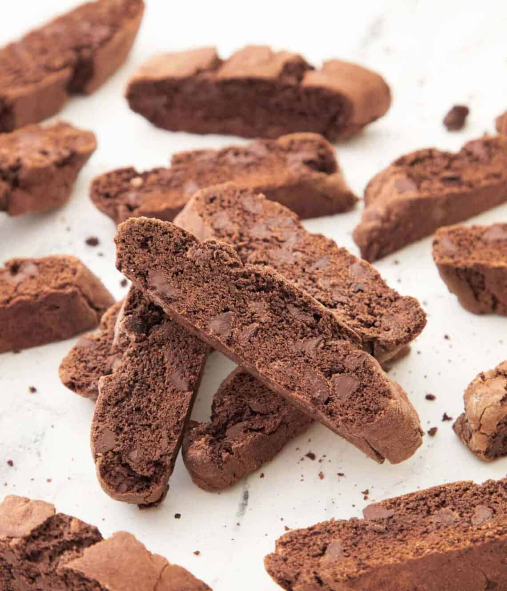

Home
Chocolate Biscotti

A new take on an old country classic!
Ingredients
- 2 cups of all-purpose flour
- 2 large eggs
- 3/4 cup of sugar
- 1/2 cup of butter, left out at room temperature
- 1/3 cup of cocoa powder
- 1 1/2 teaspoons of baking powder
- 1/2 cup of chocolate chips
- 1/4 teaspoon of salt
- 1 tablespoon of vanilla extract
A note on vanilla extract: I find all recipes undersell the amount of vanilla extract you should be adding to truly get the benefit.
With that in mind, I have upped the amount the original version of this recipe requested to what I feel is a better starting point.
Feel free to add or subtract the amount of extract you add per your own tastes
Steps
- Preheat your oven to 350 degrees
- In a large bowl, whisk together the flour, cocoa powder, baking powder, and salt.
- Using either a stand mixer or handheld mixer with a paddle attachment, in a separate bowl beat the butter and sugar until uniform. This should take about 2-3 minutes
- Increase the speed of the mixer, and add the eggs 1 at a time. Make sure to scrape the sides to fully incorpate the eggs.
Add the vanilla extract and continue mixing until uniform. This takes about 1 minute
- Lower the speed of the mixer, slowly add the flour mixture from step 1 into your butter bowl from step 2. Contnue mixing until the dry ingredients are uniformly incorporated.
Make sure to scrape anything stuck on the sides back into the main mixture. Add the chocolate chips all at once, and keep mixing until they are well distributed.
- Divide the dough in half, then roll out each into a 12 inch log on a pan lined with parchment paper.
- Using your palms, push down on the tops of the logs until they are roughly an inch thick. Sprinkle both logs with sugar
- Bake the logs for roughly 25 minutes. Start checking on them around the 20 minute mark, you want them crisp on the top but still a little soft in the middle
- Take the biscotti out of the oven and let them rest at room temperature for at minimum a few hours.
The longer they rest, the cleaner they will be to cut through later
- Reset your oven temperature to 300 degrees
- Using a serrated knife, slice each log AT AN ANGLE into roughly half inch slices. Placae them cut side facing down on the parchment paper, they don't have to be spaced out
- Bake for 25 minutes, remove from the oven and let them cool to room temperature on the pan